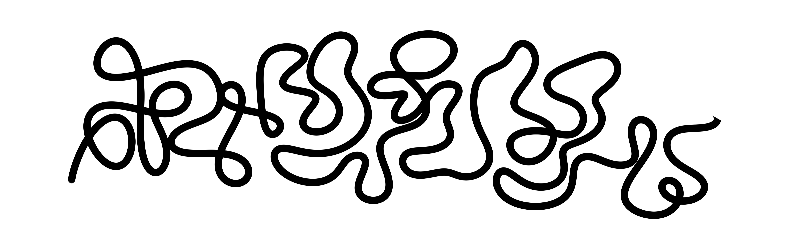
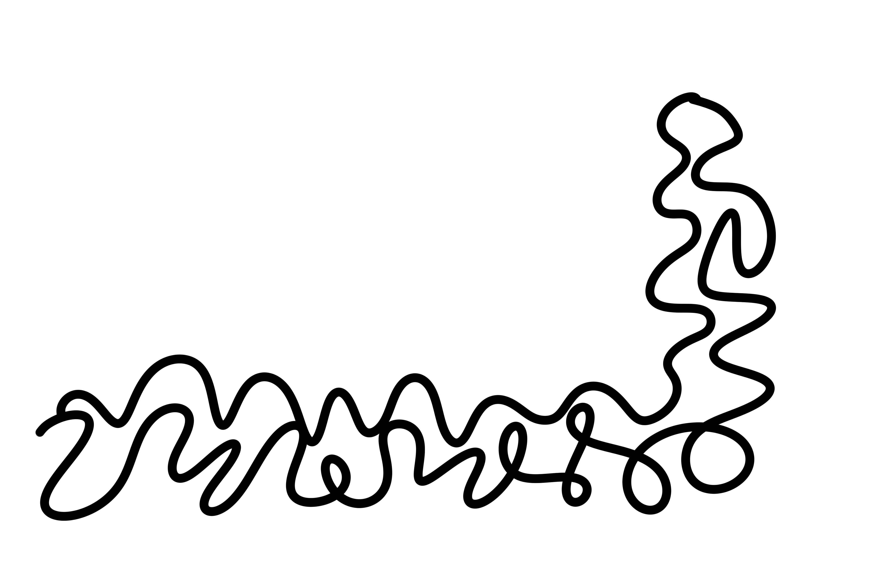
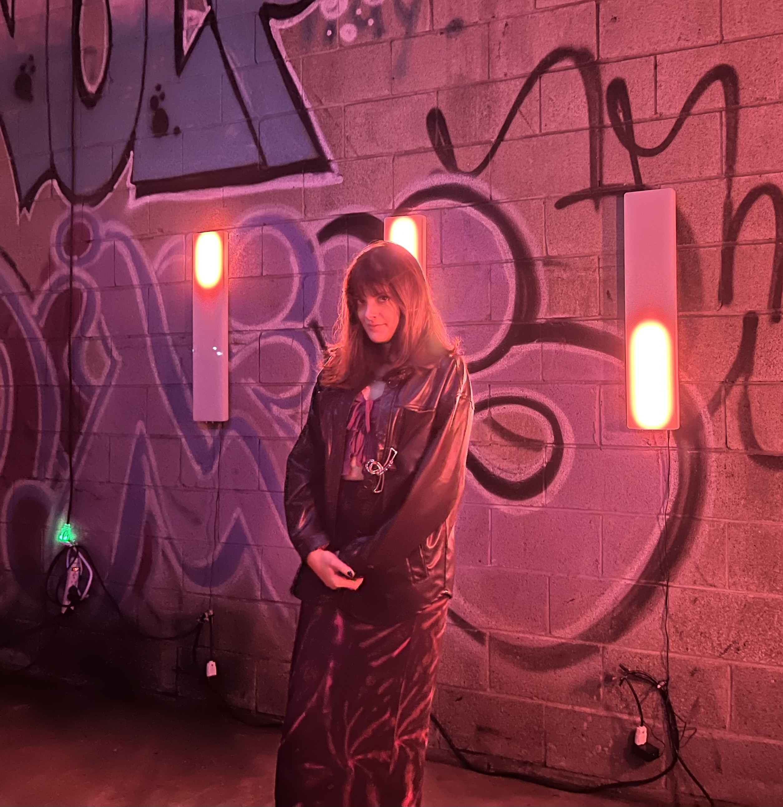
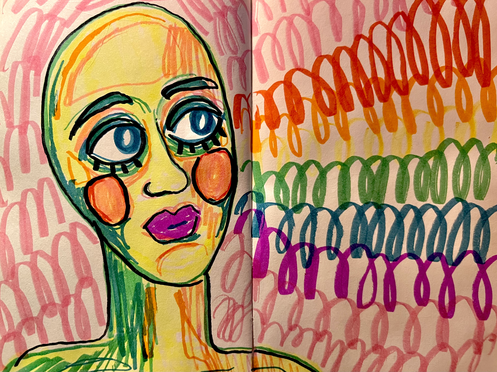
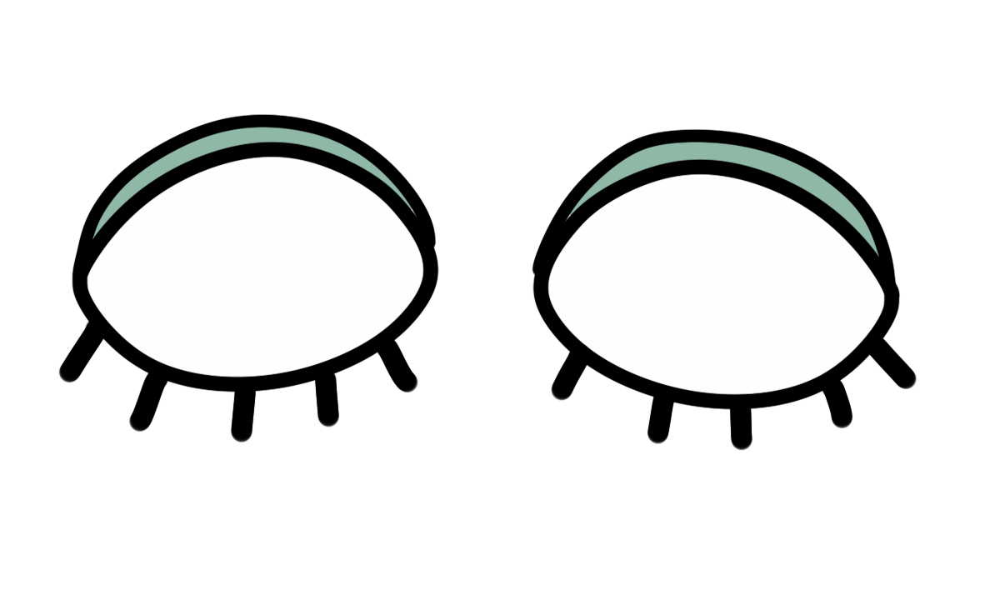
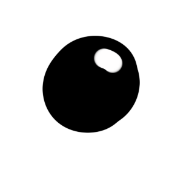

Amber Abboud


My work explores the relationship between internal experience and physical systems.
I create images that move between bodies, cells, faces, and patterns, treating each as a way of understanding what it feels like to exist from the inside.
Through repetition, variation, and layered textures, I build a visual language that blurs the line between structure and intuition, biology and emotion, form and feeling.
I am interested in how identity shifts and reorganizes, not as a fixed attribute, but as something that takes form and adapts through perception, attention, and time.

I notice that what I make shifts with my internal state, often before I fully understand it.
As an image begins to take form, it becomes something I can decode, a reflection of my own emotions.
Through this process, making becomes an act of recognition, where internal states take form and become perceptible just beyond immediate awareness.

What emerges through this process is a body of work that engages a reciprocal relationship of perception, where the viewer exists as both observer and observed.
This dynamic unsettles fixed ways of seeing, allowing meaning to shift through interaction and attention.
In this way, the work resists a single interpretation, remaining in flux as it is encountered.

